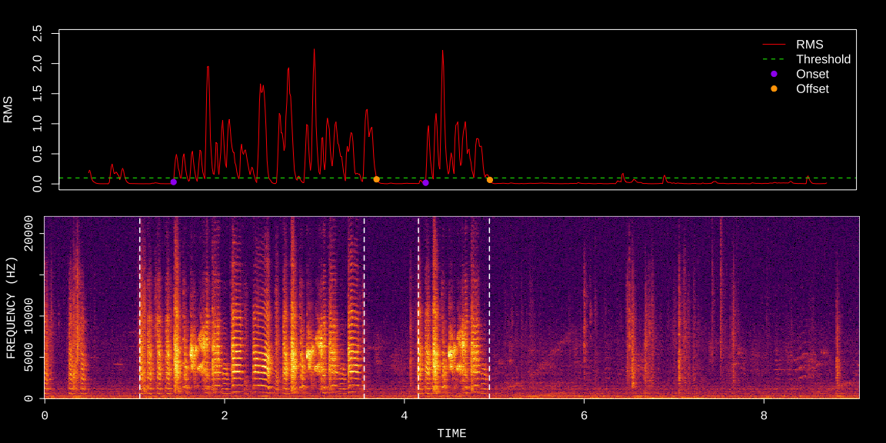
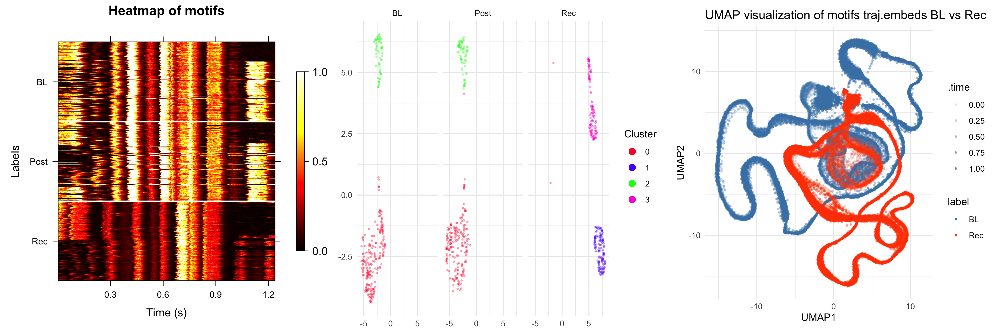

Overview
ASAP (Automated Sound Analysis Pipeline) is an R toolkit designed for the longitudinal analysis of birdsong development, specifically optimized for tracking and studying the long-term vocalization patterns of zebra finches.
The pipeline introduces a dedicated SAP object, which streamlines the processing of recordings from the SAP2011 system or other sound data organized with similar structures. Additionally, ASAP is built with flexibility in mind, allowing for the integration of other objects to ensure compatibility with various recording platforms.
Key Features
Bout Detection: Automatically identifies periods of singing within recordings.
Motif Extraction: Extracts recurring song motifs for in-depth analysis.
Syllable Segmentation: Breaks down songs into individual syllables for detailed study.
Template Matching: Compares and matches song patterns against predefined templates.
Feature Extraction: Extracts detailed temporal and spectral features from vocalizations.
Standardized Analytical Workflows: Utilizes predefined workflows for consistent and efficient analysis.
Example
Detecting Bout Boundaries and Syllable Segmentation
This example demonstrates how to use functions to detect bout boundaries and perform syllable segmentation on a single WAV file of a zebra finch recording.
library(ASAP)
# Get path to example WAV file
wav_file <- system.file("extdata", "zf_example.wav", package = "ASAP")
# Find bout
bouts <- find_bout(wav_file, rms_threshold= 0.1, min_duration = 0.7)
# Segmentation
syllables <- segment(wav_file, start_time = 1, end_time = 5, flim = c(1, 8),
silence_threshold = 0.01, min_syllable_ms = 20,
max_syllable_ms = 240, min_level_db = 10, verbose = FALSE)
Standardized Song Analysis Pipeline for Motif Analysis
This example demonstrates a song analysis pipeline initiated by creating a SAP object, which tracks and visualizes motif changes over time using heatmaps and latent space projections.
# Create sap object
sap <- create_sap_object(
base_path = "/path/to/your/wav/file/directory",
subfolders_to_include = c("190", "201", "203"),
labels = c("BL", "Post", "Rec")
)
# A standardized pipeline for motif analysis
sap <- sap |>
create_audio_clip(indices = 1, start_time = 1, end_time = 2.5,
clip_names = "m1") |>
create_template(template_name = "d", clip_name = "m1",
start_time = 0.72, end_time = 0.84,
freq_min = 1, freq_max = 10,
threshold = 0.5, write_template = TRUE) |>
detect_template(template_name = "d") |>
find_motif(template_name = "d", pre_time = 0.7, lag_time = 0.5) |>
analyze_spectral(balanced = TRUE) |>
find_clusters() |>
run_umap() |>
create_trajectory_matrix(data_type = "feat.embeds", clusters = c(0, 1), balanced = TRUE) |>
run_pca() |>
run_umap(data_type = "traj_mat", min_dist = 0.5)
# Visualization
sap <- sap |>
plot_heatmap(balanced = TRUE, ordered = TRUE)|>
plot_umap(split.by = "label") |>
plot_umap2(data_type = "traj.embeds", overlay_mode = TRUE,
base_label = "BL", compare_labels ="Rec")